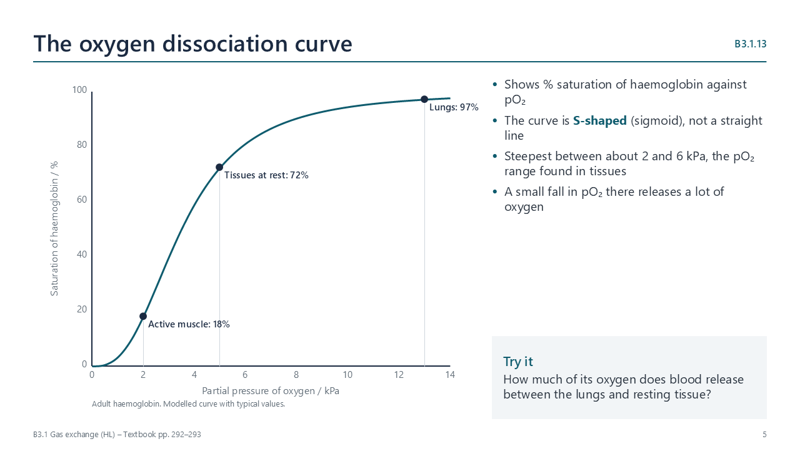

Oxygen dissociation curves
pp. 292–293
The curve plots percentage saturation of haemoglobin against the partial pressure of oxygen (pO2, in kPa). It is S-shaped because of cooperative binding: when one O2 binds, the subunit changes shape and the other haem groups gain affinity. So haemoglobin loads almost fully in the lungs (about 13 kPa) and unloads readily in tissues (2–5 kPa), where the curve is steepest.